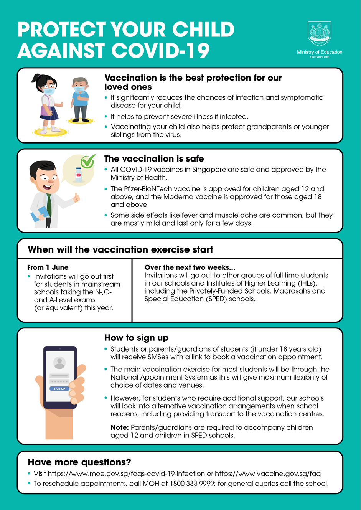

Vaccination Exercise
Dear Student,
Since the start of the COVID-19 pandemic, we have been working tirelessly to keep our institution safe for our colleagues and students. This has enabled teaching and learning to continue in our institutions amidst the COVID-19 pandemic, which would not have been possible without the good work and cooperation from everyone.
COVID-19 Vaccination Programme
2. The nation has commenced COVID-19 vaccination since the end of last year, with the plan to vaccinate the population progressively in the coming months. While COVID-19 vaccination is not mandatory, the government is strongly encouraging all Singaporeans to take up the vaccination when it is made available to them given that vaccination is one of the key enablers for Singapore to emerge safely and as quickly as possible from the pandemic.
3. As announced by MOE on 31 May 2021, the vaccination exercise is extended to all students including ITE students. As all three ITE Colleges will be set up as vaccination centres, you will receive your vaccination on campus. Your Class Advisors will inform you on your scheduled date and time for your first dose (14-25 Jun) and second dose (26 Jul – 6 Aug). Your Class Advisor will also issue you a Medical Declaration/Consent Form. Students who are below 18 will need consent from your parents/guardians for the vaccination.
4. We would like to strongly encourage you to take up the vaccination if you are medically eligible, as this helps to protect yourselves, your loved ones and our community.
5. Let us continue to stand together in fighting this pandemic, and keep our institutions, our community and our loved ones safe.
6. Thank you.
